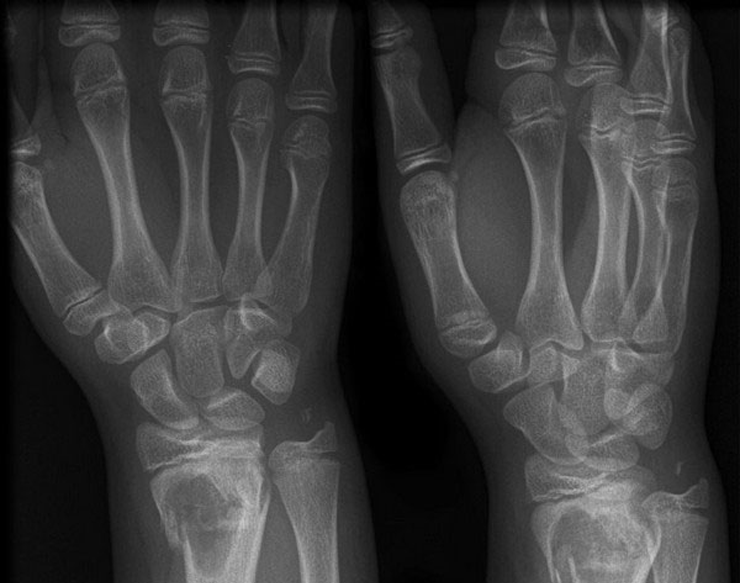

-
 Elza Lander10 Minuten zum Lesen
Elza Lander10 Minuten zum Lesen
Die allerletzte Rettung: Die Hypotonie in nur 6 Minuten loswerden
Hallo, meine Lieben.
Vor noch einem Jahr hatte ich einen völlig passiven Lebensstil. Ich hatte überhaupt keine Kraft, fühlte mich ständig müde, hatte dazu auch noch immer Kopfschmerzen. All diese Symptome der Hypotonie verwandelten mich zu einer alten Oma. Dabei bin ich erst 54 Jahre alt. Inzwischen habe ich wieder angefangen zu joggen, gehe ins Fitnessstudio und denke sogar darüber nach Surfen zu lernen. Und das alles, weil ich vor einem Jahr einen Weg gefunden habe, die Hypotonie ein für alle Mal loszuwerden.

Das Ganze begann mit Übelkeit
Seit meiner Kindheit ist mir ständig im Auto übel geworden. Ich konnte während der Fahrt nichts lesen, mir ist so schlecht geworden, dass ich nicht einmal sprechen konnte. Der einzige Weg, um ans Ziel zu gelangen und sich nicht zu übergeben, waren Tabletten.
Nach 30 Jahren kamen auf noch Kopfschmerzen hinzu. Dabei waren es keine gewöhnlichen Schmerzen oder Schwindelgefühle. Das war schrecklich. Es fühlte sich so an, als wäre in meinen Ohren ein Feuerwerk explodiert.
Mir war so übel, dass ich manchmal sogar das Bewusstsein verloren habe. Tabletten und Wasser und alles andere, was in meinen Körper gelang, kam sofort wieder heraus. Um diesen Zustand ein wenig zu verbessern, musste ich mich unbedingt hinlegen. Am nächsten Tag ging es mir ein wenig wieder besser.
Bis 45 Lebensjahr habe ich mich so ein mal im Jahr gefühlt. Nach dem 50 Lebensjahr habe ich mich immer schlechter gefühlt.
 Niedriger Blutdruck ist für mich längst zur Norm geworden
Niedriger Blutdruck ist für mich längst zur Norm geworden
Selbstheilung:Höhen und Tiefen mit Verletzungen
Traditionelle Methoden im Kampf gegen die Hypotonie sind äu0ßerst gefährlich. Einige Methoden helfen in der Tat (wie zum Beispiel Kaffee), bei anderen wird es noch schlechter.
Nachdem ich wegen zu hohem Konsum von Energiegetränken im Krankenhaus gelandet bin, habe ich aufgehört mich selbst zu behandeln.
 Knochenbrüche aufgrund der Hypotonie ist bereits zu viel des Guten!
Knochenbrüche aufgrund der Hypotonie ist bereits zu viel des Guten!
Es regnete, ich fühlte mich schrecklich und konnte lange Zeit nicht einschlafen. Hatte schreckliche Kopfschmerzen, doch es war bereits an der Zeit zur Arbeit zu gehen.
Ein hausgemachter Cappuccino, ein paar Tabletten gegen Kopfschmerzen und es ging mir schon etwas besser. Ich fühlte mich wieder kräftig und hatte genug Kraft, um zur Arbeit zu gehen.
So ging es mir in den nächsten drei Stunden. In der vierten Stunde wollte ich mir wieder einen Kaffee gönnen und bin auf dem Weg zur Kaffeemaschine bin ich bewusstlos zusammengebrochen. Das war mein erster Knochenbruch in meinem Leben. Ich fiel auf meinen Arm, beschädigte zwei Gelenke und beschloss nie wieder zu experimentieren.
 Röntgenbild der Hand
Eine Krankheit, die nicht ernst genommen wird
Ich hatte immer niedrigen Blutdruck, offiziell diagnostiziert wurde sie mir aber nicht. Als ich mich über eine schreckliche wetterfühlig beschwert habe, hat der Arzt mir empfohlen sich mehr auszuruhen, weniger Stress zu haben und von zeit zu Zeit Kaffee zu trinken.
Das Unangenehmste an der Hypotonie ist, dass sie nicht geheilt werden kann. Es gibt Tabletten gegen Kopfschmerzen (die nicht besonders gut helfen) gegen Übelkeit und von der Hypotonie gibt es immer noch keine Medikamente. Dafür wurde ein Gerät erfunden, das dem Körper Energie verleiht, Kopfschmerzen lindert, den Blutdruck normalisiert und damit hilft die Hypotonie loszuwerden.
 Bei Hypotonie verengen sich die Gefäße, die Durchblutung verlangsamt sich, es kommt zu Sauerstoffmangel
Bei Hypotonie verengen sich die Gefäße, die Durchblutung verlangsamt sich, es kommt zu Sauerstoffmangel
Rettung der Menschen mit niedrigem Blutdruck
Eine Arbeitskollegin, die den Krankenwagen gerufen hat, hat mir vom Blutdruckkorrektor АВР-051 erzählt. Das ist ein Gerät, das die verengten Gefäße bei Menschen mit der Hypotonie mithilfe aktueller Signale tonisiert. Wir Menschen nehmen sie fast überhaupt nicht war. Die Behandlung mit diesem Gerät hilft bei folgenden Krankheiten:
- Kopfschmerzen, Migräne;
- Chronische Müdigkeit;
- Schlafstörungen;
- Nervosität, Reizbarkeit;
- Tachykardie;
- Herz-Kreislauf-Erkrankungen.
Ich habe nicht besonders daran geglaubt, habe den Blutdruckkorrektor jedoch dennoch ausprobiert. Nach etwa zwei Wochen, als ich noch krankgeschrieben war, habe ich in nur wenigen Stunden so viel Arbeit gemacht, wie früher am ganzen Tag.

Ich habe endlich wieder Kraft bekommen! Ich bin morgens aufgestanden und habe tagsüber nicht mehr daran gedacht, sich wieder ins Bett zu legen. Es gab natürlich auch Tage, als es den ganzen Tag über geregnet hat und man lieber zu Hause bleiben möchte, Kopfschmerzen hatte ich dabei aber nicht.Ich habe mich wieder zu einer ganz gewöhnlichen Person mit einem normalen Blutdruck verwandelt.
Wo kann man dieses Gerät gegen die Hypotonie erhalten
Später habe ich mir natürlich noch meinen eigenen Blutdruckkorrektor bestellt. Gemäß den Anweisungen dauerte die Behandlung nur zwei Wochen (diese zwei Wochen ließ ich mich noch mit dem Gerät meiner Arbeitskollegin behandeln und fühlte bereits.
Zur Vorbeugung wird empfohlen die Behandlungskurse alle 4-6 Monate zu wiederholen. Schließlich sind wir täglich körperlichem und geistigem Stress ausgesetzt. Das Gerät ist daher sehr nützlich und sollte in jeder Hausapotheke vorhanden sein. Es kann sowohl zur Behandlung, als auch zur Vorbeugung genutzt werden.

Welche Krankheiten АВР-051 noch behandelt, finden Sie auf der offiziellen Webseite. Dort haben Sie dazu auch noch die Möglichkeit das Gerät bis zum zum Aktionspreis bestellen.
Wünsche allen viel Glück und eine gute Gesundheit.
Auf die Webseite des Herstellers des Blutdruckkorrektors übergehen


Weekly Newsletter
Abonnieren Sie unabhängige Nachrichten
der besten LiveJournal Blogger